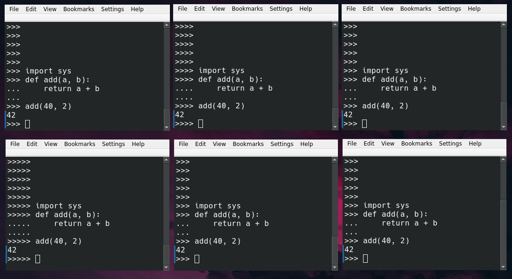
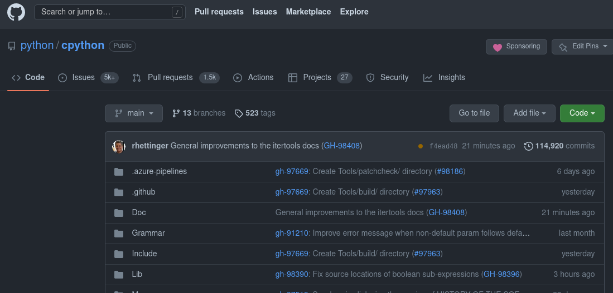

Creando módulos de Python:
con C/C++
Dr. Cristián Maureira-Fredes
Senior R&D Manager en 
@cmaureir


¿Python?
¿Python?

El repositorio de CPython
Construyendo tu propio Python
- Clona el repositorio
git clone https://github.com/python/cpython.git - Configura el proyecto
# Puedes seleccionar un directorio de 'build' e 'install' cd cpython/ ./configure - Compila, y a disfrutar!
# Para 'X' procesos make -j X ./python Python 3.12.0a0 (Oct 1 2022, 22:56:41) [GCC 12.2.0] on linux Type "help", "copyright", "credits" or "license" for more information. >>> print("yay!") yay!
¿Qué hay dentro?

Necesitamos
un poco de C

Python y C
# Un comentario
import mi_modulo
def suma(a, b):
return a + b
def main():
msg = "hola mundo"
x = 3
y = 0.14
z = suma(x, y)
print("%f" % z)
if __name__ == "__main__":
main()
// Un comentario
#include <mi_modulo.h>
float suma(int a, float b) {
return a + b;
}
int main(){
char msg[] = "hola mundo";
int x = 3;
float y = 0.14;
float z = suma(x, y);
printf("%f", z)
return 0;
}
Python y C (+anotaciones de tipo)
# Un comentario
import mi_modulo
def suma(a: int, b: float) -> float:
return a + b
def main() -> None:
msg: str = "hola mundo"
x: int = 3
y: float = 0.14
z: float = suma(x, y)
print("%f" % z)
if __name__ == "__main__":
main()
// Un comentario
#include <mi_modulo.h>
float sum(int a, float b) {
return a + b;
}
int main(){
char msg[] = "hola mundo";
int x = 3;
float y = 0.14;
float z = suma(x, y);
printf("%f", z)
return 0;
}
Punteros 👇 👈 👉 ☝️ (en C)
int variable = X;
Asignamos el valor X a la variable.
(Similar en Python variable = X)
int *variable = X;
El puntero variable apunte a la dirección de memoria de X.
(Solo lectura de la dirección de memoria en Python id(variable))
if __name__ == "__main__":
print("Hola Python Panamá")
#include <iostream>
int main() {
std::cout << "Hola Python Panamá";
return 0;
}
template <bool C, typename TR, typename FR>
class if_;
template <typename TR, typename FR>
struct if_<true, TR, FR>{ typedef TR result;};
template <typename TR, typename FR>
struct if_<false, TR, FR> { typedef FR result;};
int main() {
typename if_<true, int, void*>::result n(3);
typename if_<false, int, void*>::result p(&n);
typedef typename if_<(sizeof(void *) > sizeof(uint32_t)),
uint64_t, uint32_t>::result i_ptr_t;
i_ptr_t c_p = reinterpret_cast<i_ptr_t>(p);
}
Compile-time if Template Meta Programming (Wikibooks)
(╯°□°）╯︵ ┻━┻C++11: auto y decltype
const std::vector v(1);
auto a = v[0]; // a: type int
auto c = 0; // c: type int
auto d = c; // d: type int
decltype(c) e; // e: type int, desde c
decltype((c)) f = c; // f: type int&, (c) es un lvalue
decltype(0) g; // g: type int, 0 es un rvalue
C++11: bucles for
std::vector<int> v {1, 2, 3, 4, 5};
// forma antigua
for (int i = 0; i < v.size(); i++)
x += v[i];
// o con un iterador...
// obteniendo int de v
for (int &i : v)
x += i;
// utilizando inferencia de tipos
for (auto &i : v)
x += i;
C++11: funciones lambda
// [](int x, int y) -> int { return x + y; }
// [&x](int i) -> int { x += i; }
std::vector<int> v{ 1, 2, 3, 4, 5 };
int x = 0;
std::for_each(begin(v),
end(v),
[&x](int i) {
x += i;
});
C++20 y Python: for
#include <ranges>
using namespace std;
for (auto i : views::ints(0, 5))
cout << i << endl;
for i in range(0, 5):
print(i)
C++20 and Python: palindrome
#include <ranges>
using namespace std;
bool is_palindrome(std::string_view word)
{
return std::ranges::equal(word, views::reverse(word));
}
def is_palindrome(word):
#return word == word[::-1]
return word == "".join(reversed(word))
Python también puede ser complicado 🥲
_="_=%r;print(_%%_)";print(_%_)
# Para un número 'n'
n&~-n<1
¿Qué es eso que se llama PyObject?
PyObject
typedef struct _object {
_PyObject_HEAD_EXTRA
Py_ssize_t ob_refcnt;
struct _typeobject *ob_type; // ?
} PyObject;
typedef struct _typeobject {
PyObject_VAR_HEAD
const char *tp_name; /* For printing, in format "." */
Py_ssize_t tp_basicsize, tp_itemsize; /* For allocation */
/* Methods to implement standard operations */
destructor tp_dealloc;
Py_ssize_t tp_vectorcall_offset;
getattrfunc tp_getattr;
setattrfunc tp_setattr;
PyAsyncMethods *tp_as_async; /* formerly known as tp_compare (Python 2)
or tp_reserved (Python 3) */
reprfunc tp_repr;
/* Method suites for standard classes */
PyNumberMethods *tp_as_number;
PySequenceMethods *tp_as_sequence;
PyMappingMethods *tp_as_mapping;
/* More standard operations (here for binary compatibility) */
hashfunc tp_hash;
ternaryfunc tp_call;
reprfunc tp_str;
getattrofunc tp_getattro;
setattrofunc tp_setattro;
/* Functions to access object as input/output buffer */
PyBufferProcs *tp_as_buffer;
/* Flags to define presence of optional/expanded features */
unsigned long tp_flags;
const char *tp_doc; /* Documentation string */
/* Assigned meaning in release 2.0 */
/* call function for all accessible objects */
traverseproc tp_traverse;
/* delete references to contained objects */
inquiry tp_clear;
/* Assigned meaning in release 2.1 */
/* rich comparisons */
richcmpfunc tp_richcompare;
/* weak reference enabler */
Py_ssize_t tp_weaklistoffset;
/* Iterators */
getiterfunc tp_iter;
iternextfunc tp_iternext;
/* Attribute descriptor and subclassing stuff */
struct PyMethodDef *tp_methods;
struct PyMemberDef *tp_members;
struct PyGetSetDef *tp_getset;
struct _typeobject *tp_base;
PyObject *tp_dict;
descrgetfunc tp_descr_get;
descrsetfunc tp_descr_set;
Py_ssize_t tp_dictoffset;
initproc tp_init;
allocfunc tp_alloc;
newfunc tp_new;
freefunc tp_free; /* Low-level free-memory routine */
inquiry tp_is_gc; /* For PyObject_IS_GC */
PyObject *tp_bases;
PyObject *tp_mro; /* method resolution order */
PyObject *tp_cache;
PyObject *tp_subclasses;
PyObject *tp_weaklist;
destructor tp_del;
/* Type attribute cache version tag. Added in version 2.6 */
unsigned int tp_version_tag;
destructor tp_finalize;
vectorcallfunc tp_vectorcall;
/* bpo-37250: kept for backwards compatibility in CPython 3.8 only */
Py_DEPRECATED(3.8) int (*tp_print)(PyObject *, FILE *, int);
#ifdef COUNT_ALLOCS
/* these must be last and never explicitly initialized */
Py_ssize_t tp_allocs;
Py_ssize_t tp_frees;
Py_ssize_t tp_maxalloc;
struct _typeobject *tp_prev;
struct _typeobject *tp_next;
#endif
} PyTypeObject;
/* The *real* layout of a type object when allocated on the heap */
typedef struct _heaptypeobject {
/* Note: there's a dependency on the order of these members
in slotptr() in typeobject.c . */
PyTypeObject ht_type;
PyAsyncMethods as_async;
PyNumberMethods as_number;
PyMappingMethods as_mapping;
PySequenceMethods as_sequence; /* as_sequence comes after as_mapping,
so that the mapping wins when both
the mapping and the sequence define
a given operator (e.g. __getitem__).
see add_operators() in typeobject.c . */
PyBufferProcs as_buffer;
PyObject *ht_name, *ht_slots, *ht_qualname;
struct _dictkeysobject *ht_cached_keys;
/* here are optional user slots, followed by the members. */
} PyHeapTypeObject;
No tienes que aprenderlo todo
Piensa en PyObject como una caja grande 📦, que se puede llenar con lo que necesites
Para un PyObject o (1/2)
- Si implementa elementos numéricos con PyNumber_ tenemos acceso a la API en docs.python.org/3/c-api/number.html
PyNumber_Check(o) // Verifica protocolos numéricos
PyNumber_Add(o1, o2) // Equivalente a o1 + o2
// Tambien para flotantes PyFloat_*
// y enteros largos PyLong_*
// ...
Para un PyObject o (2/2)
- Si implementa elementos de secuencia PySequence_ tenemos acceso a la API en docs.python.org/3/c-api/sequence.html
PySequence_Check(o) // Verifica protocolos secuencia
PySequence_GetItem(o, i) // Equivalente a o[i]
// Tambien para listas PyList_*
// y conjuntos PySet_*
// ...
Creando un módulo simple
#include <Python.h>
static PyObject* simple_hola(PyObject* self, PyObject* args){
char *msg = "Hola Panamá";
return Py_BuildValue("s", msg);
}
static char simple_docs[] = "hola(): imprime hola\n";
static PyMethodDef funciones[] = {
{"hola", (PyCFunction)simple_hola, METH_NOARGS, simple_docs},
{NULL, NULL, NULL, NULL}
};
static struct PyModuleDef simplemodule = {
PyModuleDef_HEAD_INIT, "simple", NULL, -1, funciones
};
PyMODINIT_FUNC PyInit_simple(void){
return PyModule_Create(&simplemodule);
}
Un ejemplo más avanzado
fastglob
Directories: 172246
Files: 2360091
glob
Non recursive: 0.01
Recursive: 4.04
Pathlib.glob
Non recursive: 0.41
Recursive: 1.52
fastglob.glob
Non recursive: 0.02
Recursive: 0.33
Aprendiendo sobre el núcleo de Python rompiéndolo todo:
un tour gentil y en español
Dr. Cristián Maureira-Fredes
@cmaureir